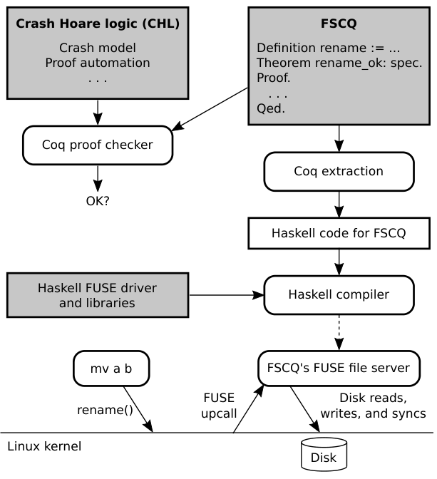
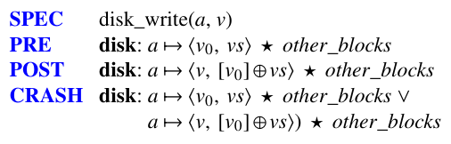
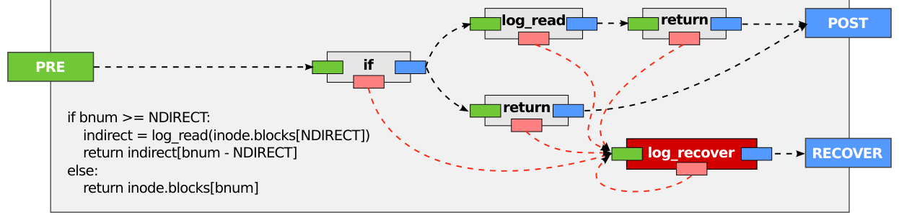
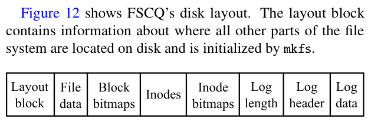
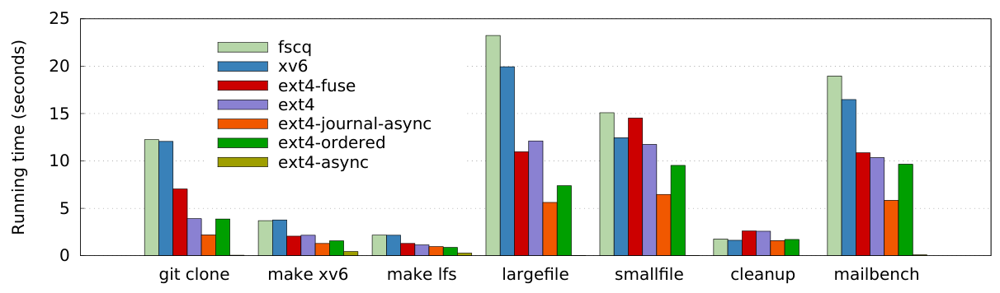
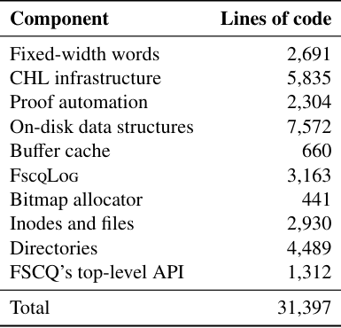
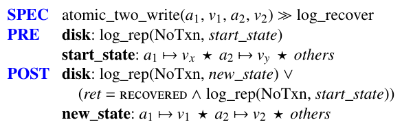
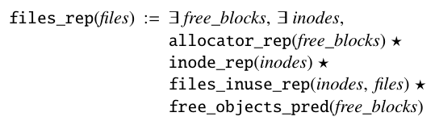
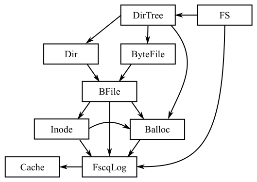

Using Crash Hoare Logic for Certifying the FSCQ File System
This page was written by an AI model to give a high-level overview of the paper. Please check the paper for detail: ACM Digital Library.
File systems must survive crashes, such as power failures, without losing or corrupting data. This is hard to get right: a file system can work correctly in almost every case, yet still have a bug that only manifests if a crash happens between two specific disk writes, for example forgetting to zero a newly allocated directory block or issuing writes without the barriers needed to keep their order after a crash. Such bugs have caused real data loss in mature file systems, including a 2013 Bitcoin bug that corrupted a LevelDB database.
Existing ways of catching these bugs, testing, program analysis, and model checking, are effective in practice but cannot guarantee that none remain, because none of them exhaustively covers every point at which a crash could occur across every execution. Formal verification has succeeded for other systems software, such as the CompCert compiler and the seL4 microkernel, but neither reasons about crashes: a compiler has no persistent state, and prior file-system specification efforts either do not model crashes at all or are not connected to an executable, provably correct implementation. Ordinary Hoare logic, which states a precondition and postcondition for a procedure, also cannot express what should hold if a crash interrupts that procedure partway through, nor that a recovery procedure (like fsck) will run afterward and might itself be interrupted by another crash.
The paper's answer is Crash Hoare Logic (CHL), which extends Hoare logic with three ingredients: a crash condition describing every disk state in which the system could be interrupted; a recovery execution semantics that composes a normal procedure with a (possibly repeatedly crashing) recovery procedure; and logical address spaces, which let separation logic's reasoning about disjoint regions apply not just to physical disk blocks but to higher-level abstractions such as files, directories, or the contents of a transaction log.
Using CHL, a developer writes a precondition, postcondition, and crash condition for every procedure, even internal ones, and CHL's proof engine automatically chains these conditions along the procedure's control flow, so most of the remaining proof burden is to establish a handful of representation invariants connecting a logical address space to its physical encoding on disk. The authors use CHL to build FscqLog, a write-ahead log over a model of an asynchronous, reorderable disk, which exports a simple synchronous abstraction so that every layer above it only has to reason that a transaction's writes either all took effect or none did. On top of FscqLog they build FSCQ, a file system with inodes, indirect blocks, a bitmap allocator, directories, and byte-addressable files, each specified and proved against a POSIX-like subset of system calls.
FSCQ is extracted from Coq to Haskell and run as a FUSE user-level file server, and it runs unmodified Unix applications, including coreutils, vim, emacs, git, gcc, make, and a qmail-like mail server, with performance close to the xv6 teaching file system and about 2 times slower than ext4 run with synchronous data journaling. FSCQ comprises about 31,000 combined lines of code and proof, took a small team of researchers about a year and a half to build, and Coq checks the entire proof, with no unproven axioms, in 11 hours.

Key takeaways
- CHL extends Hoare logic with crash conditions, a recovery execution semantics, and logical address spaces, letting developers specify and prove crash-safe storage systems.
- FSCQ is the first file system with a machine-checked proof, in Coq, that its implementation meets a specification that includes arbitrary crashes and reboots.
- CHL automates most of the proof by chaining pre-, post-, and crash conditions along a procedure's control flow, leaving developers to prove mainly representation invariants.
- FscqLog, a write-ahead log proved correct over an asynchronous disk model, gives higher layers a simple all-or-nothing transaction abstraction, localizing crash reasoning.
- FSCQ runs real Unix applications with performance close to xv6 and about 2x slower than ext4 with synchronous data journaling; the proof effort, about 31,000 lines total, took roughly 1.5 years for a small team.
From Hoare logic to a certified file system
Why crashes break ordinary specifications, what CHL adds, how proofs are automated, and how FscqLog and FSCQ are built on top.
1 · Why crash bugs survive testing and code review
File-system bugs that only manifest under a crash at a particular instant are notoriously hard to find. Model checking and fuzz testing (such as Linux's Trinity) enumerate many user inputs, disk states, and crash points and have found real bugs, but neither can exhaustively cover every possible execution. Administrators run tools such as fsck after the fact to detect and repair inconsistencies, which only works around the underlying bugs rather than eliminating them. A broad survey of real file-system bugs groups them into categories: violated invariants (bad link counts, directory cycles), mishandled corner cases (running out of blocks mid-rename), incorrect logging and recovery order, misuse of the logging API across transactions, low-level errors (integer overflow, double free), lost or double-allocated resources, wrong error codes, and concurrency races.
Prior certified-systems work showed that proof can eliminate bugs outright: CompCert proves a compiler correct, and seL4 proves a microkernel correct. Neither, however, has persistent state that must survive a crash, so neither offers a model for reasoning about crash safety. Earlier formal file-system specifications (in ACL2, Alloy, Z, and others) either omit crashes or are not tied to a provably correct, executable implementation.
2 · Why ordinary Hoare logic is not enough
A Hoare-logic specification has the form {P} procedure {Q}: if precondition P holds before procedure runs, postcondition Q holds after it finishes. Consider a procedure that must update two disk blocks atomically, for example marking an inode allocated and recording its name in a directory, implemented by writing both blocks inside a transaction (log_begin, two log_write calls, log_commit). If a crash happens partway through, procedure stops at an arbitrary point, and the disk may be left in a state where Q does not hold. Ordinary Hoare logic has no way to describe that intermediate state, nor the fact that a recovery procedure runs after reboot (and may itself crash and need to run again) before the system can be used again.
3 · Crash conditions and the asynchronous disk model
CHL models the disk as a partial function from block address to a tuple of the last-written value and a set of previous values that could persist after a crash, which captures real disks' asynchronous, reorderable writes: an address not yet synced may revert to an older value after a crash. Reads return only the last-written value; a sync operation on an address waits until that value is durable and discards the previous ones.

CHL specifications use separation logic, whose points-to predicate a ↦ v says address a holds value v, and whose star (⋆) operator combines predicates on disjoint parts of the disk. The specification for disk_write states a precondition (a holds some old value), a postcondition (a now holds the new value, with the old value added to the possible-crash set), and a crash condition describing both possible states just before a crash: either the write had not yet happened or it had. Describing the state just before the crash, rather than the nondeterministic choice made right after it, keeps crash conditions structurally similar to pre- and postconditions, which is what makes proof automation possible (step 6).
4 · Logical address spaces and representation invariants
Writing every specification directly in terms of physical disk blocks is tedious and error-prone: describing a single-byte file write might otherwise require saying that a block was allocated from a bitmap, an inode grew, an indirect block was allocated, and some disk block that happens to correspond to the right file offset changed. CHL instead lets a developer introduce a new logical address space, such as the set of bytes in a file, or the logical disk contents inside an active transaction, and state specifications purely in terms of that abstraction.
A representation invariant is the predicate connecting a logical address space to its physical encoding on disk; it behaves like a macro that expands into a set of points-to relations. For example, the invariant for an active transaction (log_rep) says the commit block holds zero, every block in the transaction's starting state is durably on disk, and the transaction's current logical state is the result of replaying the in-memory log on top of that starting state. Once this invariant is proved once, every procedure above the log can describe its effect purely on the logical disk, without re-deriving how the log is laid out.
5 · Recovery execution semantics and idempotence
CHL adds a second execution semantics specifically for recovery: instead of a procedure finishing, crashing, or failing, a combined "procedure ≫ recovery" execution can reach a completed state (no crash occurred) or a recovered state (one or more crashes occurred, each followed by running the recovery procedure). The specification for log_recover says that, starting from any state where a transaction's effects are not yet fully determined, log_recover brings the disk to either the pre-transaction state or the fully committed state, and that its own crash condition implies its own precondition. That last property, idempotence, is what allows log_recover to be re-run safely as many times as needed if recovery itself is interrupted by further crashes.
Idempotence is also what makes recovery proofs cheap: if a recovery procedure is proved idempotent once, CHL can automatically derive the specification of any procedure combined with it (for example, that a two-block write either fully happens or not at all, even across repeated crashes during commit or recovery) directly from the no-recovery specification, without additional manual proof.
6 · Automating the proofs
Given these ingredients, proving that an implementation meets its specification follows the procedure's own control flow. CHL's proof strategy has two phases. In the first phase, CHL walks each step of a procedure (such as a call to a sub-procedure) and generates two obligations: that the current condition implies the step's precondition, and that the step's crash condition implies the whole procedure's crash condition; at the end, that the final condition implies the overall postcondition. In the second phase, CHL discharges these implications using separation logic: matching identical points-to terms on both sides of an implication cancels them out automatically, and only mismatches between different levels of abstraction (for example, a high-level directory predicate against a low-level block-of-entries predicate) need a developer's manual proof step.

The figure shows this visually for a procedure that looks up a file block's address, following indirect blocks if needed: each box is a sub-procedure's specification, arrows follow the control flow from precondition to postcondition (or, on a crash, to the recovery procedure's precondition), and the proof obligations are exactly the implications along those arrows. Because the chaining is mechanical, CHL automates it with Coq's Ltac proof-search language, and developers manually prove mostly representation-invariant lemmas rather than re-deriving control flow safety by hand.
7 · FscqLog: a certified write-ahead log
FscqLog provides begin, write, commit, abort, and recover operations, giving upper layers the illusion of a synchronous disk with all-or-nothing transactions, while internally batching writes into an in-memory log, flushing the log, writing a commit record, and only then applying the log's writes to their final locations, syncing between each phase. Because each disk_write in this sequence is itself asynchronous and can crash in intermediate states, FscqLog's actual on-disk state machine has seven distinct phases:
| State | Meaning |
|---|---|
| NoTxn | No active transaction |
| ActiveTxn | A transaction has begun; writes are buffered in memory |
| LogFlushed | The in-memory log has been written to the on-disk log area |
| CommittedUnsync | The commit block has been written but not yet synced |
| CommittedSync | The commit block is durably on disk |
| AppliedUnsync | Logged writes have been applied to their final locations, not yet synced |
| AppliedSync | Applied writes are durable; the log can be cleared |
The authors prove that FscqLog is always in exactly one of these states and that log_recover correctly recovers from every one of them, no matter how many times recovery itself is interrupted. Only the public specifications, which mention just NoTxn and ActiveTxn, are visible to code above FscqLog; the other five states are recovery-internal detail that higher layers never need to reason about. This is what lets FSCQ treat an entire system call as a single atomic transaction and prove it crash-safe by relying only on FscqLog's guarantee, instead of re-examining every possible crash point inside the system call's own code.
8 · Building FSCQ on top of FscqLog
FSCQ layers standard file-system components on FscqLog: a buffer cache; Balloc, a bitmap allocator shared by block and inode allocation; Inode, which combines direct and indirect block pointers into one logical list of blocks; BFile, a block-level file abstraction; Dir, directories built on block-level files; ByteFile, a byte-addressable file interface; DirTree, which combines directories and files into a hierarchical tree; and FS, which wraps each POSIX-like system call in an FscqLog transaction. FSCQ's on-disk layout places a layout block, the log area, inode and block bitmaps, inodes, and file data contiguously, with the layout block recording where everything else lives.

Each layer is specified in its own logical address space (for example, Inode exposes a logical array of inode records; ByteFile exposes a logical array of bytes per file) connected to the layer below by a representation invariant, so a change to one layer's physical encoding does not require re-deriving the specifications of layers above it, as section 6 of the Evaluation tab discusses for FSCQ's incremental development.
9 · Design patterns for certified systems code
- A reusable allocator. Balloc exposes a free_objects_pred(obj_set) predicate asserting that every free object ID points to some value; combined with ⋆ against a predicate for in-use objects, this gives a complete, provably disjoint description of allocated versus free, reused for both block and inode allocation without re-proving disjointness each time.
- On-disk record packing. A library (Rec) packs typed fields, such as an inode's length, attributes, indirect-block pointer, and direct block addresses, into a bit-level on-disk format, and proves once that field accesses commute and that packing and unpacking are inverses, so higher code never has to reason about bit layout directly.
- A pragmatic buffer cache. Rather than proving a specific cache-replacement algorithm correct, FSCQ borrows CompCert's translation-validation approach: it checks at runtime that whatever block the replacement policy picks to evict is actually cached, falling back to evicting the first cached block otherwise, so the replacement algorithm itself can remain unverified code without compromising overall correctness.
10 · From Coq proof to a running file system
FSCQ and CHL are implemented together inside Coq, so implementation, specification, and proof live in the same language. Coq's extraction feature compiles the verified Coq implementation into Haskell, which is combined with a small, unverified Haskell driver (about 400 lines) plus a Haskell reimplementation of fixed-size words and disk operations (about 350 lines) and exposed to Linux as a FUSE user-level file server, letting unmodified Linux applications use FSCQ without modification.
Results from running FSCQ this way, including application performance, bug-category analysis, crash-injection testing, and the effort of evolving the proofs, are covered in the Evaluation tab.
Evaluation
Application performance, what kinds of bugs the proofs rule out, crash-injection testing, and the cost of evolving a certified file system.
The main performance comparison runs a software-development workload and a mail-server benchmark on FSCQ, a ported xv6 file system, and ext4, all mounted (or, for ext4, optionally mounted) via FUSE so the comparison is apples to apples, with every file system run in synchronous mode (every system call durably commits before returning) to make the comparison meaningful for FSCQ's design.
| What | Value in the paper |
|---|---|
| Platform | Quad-core Intel i7-3667U, 2.00 GHz, 8 GB DRAM, Linux 3.19; FSCQ's Haskell code compiled with GHC 7.10.2 |
| Storage | Intel SSDSCMMW180A3L flash SSD, on a separate partition, chosen so file-system CPU cost is not masked by a slow rotational disk |
| Workloads | git clone, make xv6, make lfs, the LFS large-file and small-file benchmark phases, a cleanup (delete) phase, and mailbench (a qmail-like mail server delivering 200 messages) |
| Baselines | xv6's file system (modified for asynchronous writes, ported to FUSE), ext4 natively and via FUSE, in data=journal+sync, journal_async_commit, data=ordered, and default async modes |
| Metric | Wall-clock running time per workload phase (seconds); per-message latency for mailbench |
FSCQ runs real applications with performance close to xv6

What it shows. A bar chart of running time (seconds) for each phase (git clone, make xv6, make lfs, largefile, smallfile, cleanup) and for mailbench, with one bar per file system: fscq, xv6, ext4-fuse, ext4, and three further ext4 configurations (journal-async, ordered, async). FSCQ tracks xv6 closely across every phase. Mailbench delivers 200 messages at about 103 msec per message on xv6 and 118 msec on FSCQ, versus about 64 msec on ext4 in synchronous data-journaling mode.
What to take from it. FSCQ is about 2 times slower than ext4 with synchronous data journaling, matching the paper's headline number. The gap to xv6 is explained by FSCQ's Haskell implementation using about 4 times more CPU than xv6's C; the gap to ext4 is explained by the number of disk syncs per transaction: mailbench needs 10 transactions per message, and with the SSD's roughly 2.8 msec per sync, FSCQ and xv6's four syncs per commit versus ext4's two syncs accounts for most of the difference. The further ext4 configurations (checksummed async commit, ordered mode, fully async mode) each roughly double throughput over synchronous journaling, showing headroom the paper attributes to design choices FSCQ has not yet adopted, such as batching transactions and logging metadata only.
The proof effort is substantial but concentrated in infrastructure, not FSCQ-specific code

What it shows. A table breaking down FSCQ's roughly 31,000 combined lines of code and proof by component: fixed-width words (2,691), CHL infrastructure (5,835), proof automation (2,304), on-disk data structures (7,572), buffer cache (660), FscqLog (3,163), bitmap allocator (441), inodes and files (2,930), directories (4,489), and FSCQ's top-level API (1,312), totaling 31,397.
What to take from it. About a third of the total (CHL infrastructure plus proof automation, 8,139 lines) is reusable machinery not specific to FSCQ, and on-disk data structures and directories together account for nearly 40%, reflecting how much of the effort goes into representation invariants for physical layout rather than high-level file-system logic. The whole system took a small team about a year and a half to build, and Coq checks the complete proof, with no unproven axioms (verified with Coq's Print Assumptions), in 11 hours on the same i7 machine.
Hundreds of induced crash states all recover to a consistent file system

What it shows. The specification being checked experimentally: a transaction combined with recovery (the ≫ operator) guarantees that, after recovery finishes, either the whole operation's effects are visible or none are. To test this end to end, the authors ran a workload (create two files, write data, create a directory and subdirectory, move files between them, append to one file, delete the other) under FSCQ's FUSE interface while recording every disk write and sync, then reconstructed every possible crash state by taking a prefix of writes up to some sync combined with every subset of writes between that sync and the next. This produced 320 distinct crash states for the workload.
What to take from it. Remounting (which runs recovery) from each of the 320 crash states and inspecting directory structure, file contents, and free-block and free-inode counts produced only 10 distinct logical outcomes, all of which the authors manually confirmed are consistent with what a POSIX application should expect. Combined with running fsstress from the Linux Test Project, which issues random file-system operations and found no problems, this is an end-to-end check that the specifications, and the unverified components (the FUSE driver, Haskell runtime), are not silently wrong in a way the Coq proofs would miss.
FSCQ's proofs rule out most categories of real file-system bugs

What it shows. FSCQ's representation invariant for the file layer, which splits the abstract disk into disjoint, separation-logic-combined parts: the allocator's bitmap, the inode area, the blocks currently in use by files, and the pool of free blocks. The paper checks this kind of invariant against eight categories of bugs found in real file systems: violated invariants, mishandled corner cases, logging and recovery mistakes, misuse of the logging API, low-level programming errors, resource-allocation bugs, incorrect error codes, and concurrency races.
What to take from it. Categories 1 through 5 are eliminated by FSCQ's proofs: for instance, the file-system tree invariant is proved to be preserved by every system call, so cycle- or link-count bugs cannot occur. Resource allocation (category 6) is guaranteed never to lose blocks, though the prototype's specification does not require returning an out-of-space error only when actually out of space. Incorrect error codes (category 7) are only partially addressed, since the prototype does not pin down every exact error code POSIX expects. Concurrency bugs (category 8) are out of scope, because FSCQ does not support multiple threads.
Later changes needed proof effort proportional to the change, not a full re-proof

What it shows. FSCQ's layered components (Cache, FscqLog, Balloc, Inode, BFile, Dir, ByteFile, DirTree, FS), connected by call arrows. The authors report four case studies of adding features after FSCQ's initial design was complete: switching FscqLog from a synchronous to an asynchronous disk model (about 1,000 lines in CHL infrastructure, over half of FscqLog's implementation and proofs); adding indirect blocks to Inode (about 1,500 lines in the Inode layer, about 50 lines of proof fixed in BFile above it); adding a buffer cache (about 300 lines in FscqLog, about 600 lines in layers above it); and an optimization to FscqLog's on-disk log layout to avoid an extra sync (about 50 lines of code and 100 lines of proof).
What to take from it. In every case, changes stayed largely confined to the layer being modified; layers above FscqLog needed no changes at all for the asynchronous-disk switch, and layers above Inode needed only a small fix for indirect blocks, because each layer's specification is stated in its own logical address space and insulated from layers below by a representation invariant. The one exception the paper flags as not expected to be incremental is multiprocessor support, which the current design and proofs do not address.
FAQ
Q·What exactly does Crash Hoare Logic add to ordinary Hoare logic?▾
Three things: a crash condition describing every disk state a procedure could leave behind if interrupted; a recovery execution semantics that models a normal procedure composed with a recovery procedure (which can itself be interrupted and rerun); and logical address spaces, which let separation logic's disjoint-region reasoning apply to abstractions like files or transaction contents, not just raw disk blocks.
Q·Is FSCQ meant to be a production file system?▾
No. FSCQ deliberately targets the feature set of xv6, a teaching Unix file system with write-ahead logging: it lacks multiprocessor support, deferred durability (fsync), hard links, and extended attributes, and runs about 2x slower than ext4 with synchronous data journaling. The paper's goal is to demonstrate that machine-checked crash safety is achievable with manageable effort, not to match a production file system's feature set or speed.
Q·How is this different from running fsck or crash-consistency fuzz tests?▾
Tools like fsck repair inconsistencies after the fact, and testing or model checking find bugs by exploring many, but not all, possible crash points and inputs. FSCQ instead has a machine-checked proof, in Coq, that its implementation meets its specification under any sequence of crashes and reboots, so (within the scope of what is proved) the classes of bugs the proof covers cannot occur at all, rather than merely being less likely to be found.
Q·What does "machine-checked proof" guarantee here, and what is left unverified?▾
It guarantees that FSCQ's Coq implementation meets its CHL specification, checked by the Coq proof assistant with no unproven axioms. Left unverified: the Haskell compiler and runtime used to extract and run the code, a small hand-written Haskell FUSE driver and word library (about 750 lines), and the FUSE kernel interface itself, since Coq's execution model only reasons about a mutable disk, not the surrounding system.
Q·Why do specifications need "logical address spaces" instead of just talking about disk blocks?▾
Describing a high-level operation, such as writing a byte range in a file, directly in terms of which physical disk blocks change (bitmap updates, inode growth, indirect-block allocation, and so on) is tedious and easy to get wrong. A logical address space lets a layer state its specification purely in its own abstraction (file bytes, inode records), with a separate representation invariant proving how that abstraction maps onto the physical disk.
Q·What does it mean for a recovery procedure to be "idempotent," and why does it matter?▾
A recovery procedure is idempotent if its own crash condition implies its own precondition, meaning it is always safe to run again from scratch if it itself is interrupted by another crash. This matters because it lets CHL automatically derive the specification of any procedure combined with recovery from that procedure's ordinary (no-recovery) specification, without extra manual proof for every possible number of nested crashes.
Q·How much of the proof work is automated versus manual?▾
CHL automatically chains preconditions, postconditions, and crash conditions along a procedure's control flow, and automatically discharges separation-logic implications where identical points-to terms match on both sides. Developers manually prove representation invariants (how a logical address space maps to disk) and any implications that cross levels of abstraction. The paper reports this still took the bulk of development time, but far less than re-deriving control-flow safety from scratch at every layer.
Q·Why is FSCQ slower than ext4?▾
Two main reasons the paper gives: FSCQ's extracted Haskell code uses about 4 times more CPU than xv6's C code, and FSCQ's simple logging protocol needs four disk syncs per transaction commit versus ext4's two, because ext4 defers applying its log until it fills up instead of applying it on every commit. Both are design choices, not fundamental limits of the certified approach.
Q·Does FSCQ support multiple processes or threads writing at once, or deferred durability like fsync?▾
No to both. FSCQ has no multiprocessor support (one transaction at a time), and every system call commits to disk immediately before returning rather than allowing an application to defer durability. The paper lists both as future work, and notes that multiprocessor support, unlike the other extensions studied, may require broad changes rather than incremental ones.
Q·What happens if the computer crashes while recovery itself is running?▾
Recovery simply runs again from the beginning. Because log_recover (and FSCQ's top-level fs_recover) are proved idempotent, i.e. their crash condition implies their own precondition, running them repeatedly after repeated crashes is always safe and eventually reaches a consistent state, whether that is the pre-transaction state or the fully committed one.
Q·Could CHL be used to build other storage systems besides FSCQ?▾
The paper presents CHL as a general specification framework, not something specific to FSCQ, and frames FSCQ as a case study demonstrating that it is usable in practice. It explicitly hopes others will use CHL for other crash-safe storage systems, though the paper itself only evaluates it through FSCQ and FscqLog.
Q·What kinds of bugs does FSCQ's proof NOT rule out?▾
Three gaps the paper names: the specification does not require returning an out-of-space error only when the system is truly out of resources; not every POSIX error code is pinned down precisely, so a wrong-but-still-an-error return is possible; and concurrency bugs are entirely out of scope, since FSCQ has no multiprocessor support.
Q·How did the authors check that the specification itself, not just the proof, was correct?▾
By testing independently of the Coq proof: running fsstress (random file-system operations from the Linux Test Project) found no problems, and systematically enumerating 320 possible crash states for a fixed workload and checking that all of them recovered to one of 10 consistent, POSIX-plausible outcomes gave an end-to-end sanity check on both the specifications and the unverified driver code.